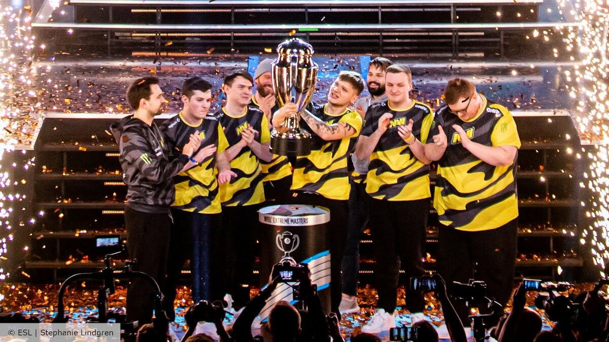

Введение
Counter-Strike — это культовая многопользовательская игра в жанре тактического шутера, которая появилась как модификация для Half-Life. С момента своего выхода в 1999 году она завоевала миллионы поклонников по всему миру. Игра стала эталоном киберспортивных дисциплин и продолжает развиваться по сей день.
Основные особенности
- Командная игра: две команды — террористы и спецназ — сражаются друг с другом на различных картах.
- Реалистичная механика: игра требует от игроков навыков стрельбы, тактического мышления и командной работы.
- Разнообразие карт: Dust, Inferno, Mirage и другие карты стали легендарными в игровом сообществе.
- Экономика игры: игроки зарабатывают деньги за успешные действия и тратят их на оружие и снаряжение.
Популярность в киберспорте
Counter-Strike стал одной из первых игр, которая привлекла внимание киберспортивных организаций. Турниры по CS собирают миллионы зрителей, а профессиональные игроки становятся настоящими звёздами. Узнать больше о киберспортивных событиях можно на HLTV.org.
